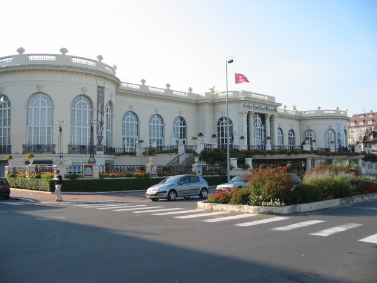
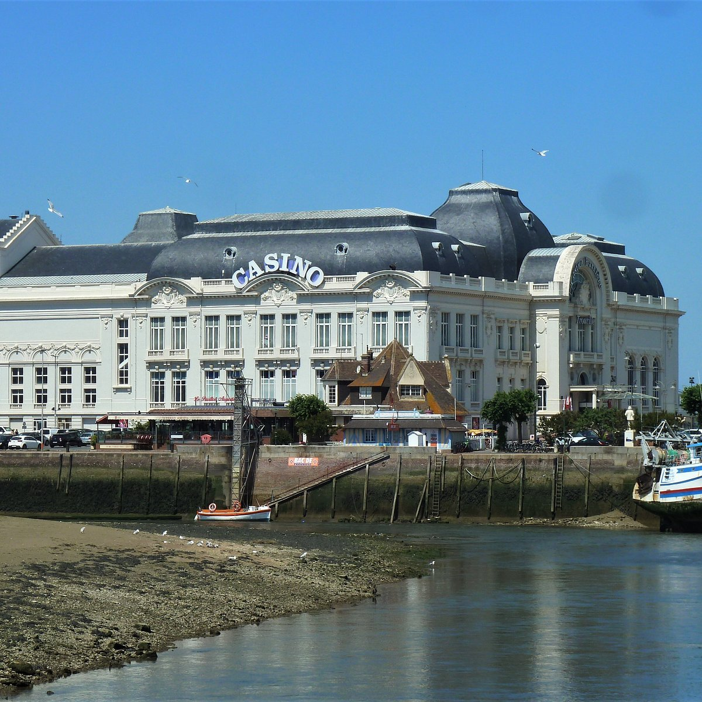
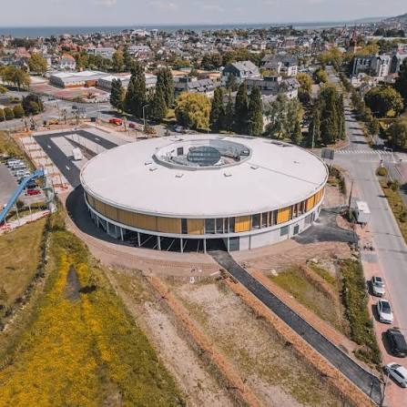

Les casinos font partie de l'ambiance de la Côte Fleurie. Au-delà des jeux, ils proposent également des spectacles, des restaurants et différentes animations pour profiter d'une soirée dans un cadre élégant et animé.


